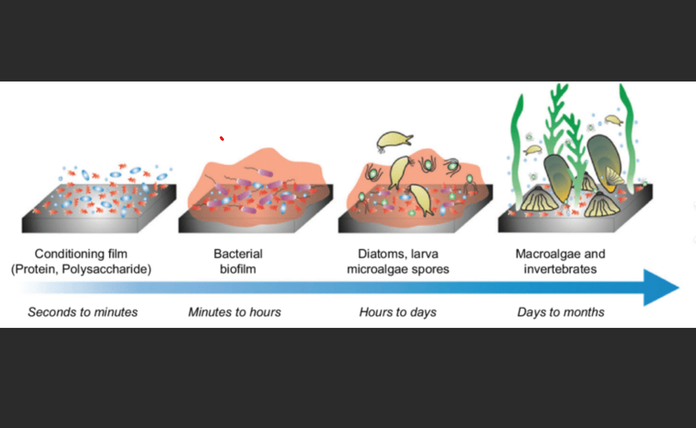
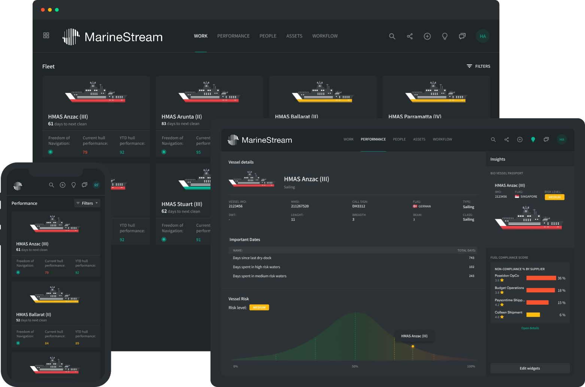

The maritime industry faces growing pressure to improve operational efficiency while meeting increasingly stringent environmental standards. At the intersection of these demands lies a critical yet often overlooked aspect of vessel management: biofouling control. As vessels traverse global waters, the accumulation of marine organisms on their hulls creates challenges that ripple through every aspect of maritime operations.
The International Maritime Organization's adoption of the 2023 Guidelines for Biofouling Management (MEPC.378(80)) marks a pivotal shift in the industry's approach to this challenge. These guidelines, coupled with increasingly stringent port state controls and growing international focus on invasive species management, signal a clear trajectory toward mandatory global standards. Vessels operating internationally must now demonstrate comprehensive biofouling management strategies, making proactive approaches not just environmentally sound but operationally essential.

Figure 1: Progressive stages of marine growth on vessel hull showing typical colonization patterns
Understanding the Impact
Regardless of regulations, the business case for effective biofouling management is compelling - vessel operators who maintain clean hulls can expect to see significant returns on their investment through reduced operational costs. The effects of biofouling extend far beyond straightforward hull maintenance. Even a moderate layer of slime increases fuel consumption by 5-20%, while heavy calcareous growth can push penalties beyond 40%. On a Panamax bulk carrier, this translates to additional fuel costs exceeding $500,000 annually at current prices. Beyond the immediate financial impact, this increased fuel consumption significantly affects a vessel's environmental footprint and Carbon Intensity Indicator (CII) rating.
The compound effects of biofouling on vessel performance create a cascade of operational challenges. Reduced speed capabilities affect scheduling reliability, while increased fuel consumption impacts both operational costs and environmental compliance. Modern vessel performance monitoring systems regularly demonstrate that maintaining hull cleanliness is as crucial to meeting CII targets as optimal voyage planning and weather routing.
Impact at a Glance:
- Fuel penalties: Light slime 5-20%, Heavy growth >40%
- Speed reduction: Up to 10% in moderate cases
- Increased GHG emissions: Direct correlation with fuel consumption
- Environmental hazards: Significant accumulation of depleted biocides
- Access restrictions: Growing number of ports requiring clean hulls
- CII Rating: Direct impact on vessel efficiency metrics
- Schedule reliability: Speed retention capabilities
Navigating the Regulatory Landscape
Currently, biofouling management requirements exist at national and regional levels, with varying standards and implementation approaches across different jurisdictions. The IMO's 2023 Biofouling Guidelines (MEPC.378(80)) represent a significant step toward international standardization, providing a comprehensive framework that jurisdictions can adopt and adapt to their specific requirements. These guidelines establish detailed technical standards for inspection, cleaning, and documentation that promote consistency in approach across maritime regions. Of particular note is the growing focus on cleaning methodology and waste capture, reflecting increased attention to both vessel performance and environmental protection.
The evolution of regulatory frameworks reflects growing scientific understanding of biofouling impacts. Modern requirements emphasize proactive management through:
- Vessel-specific biofouling management plans
- Up-to-date cleaning and inspection records
- Risk assessment protocols
- Emergency management procedures
- Performance monitoring and documentation
- Waste capture and disposal protocols
- Regular effectiveness reviews
These requirements align with both MARPOL Annex V and state-specific pollution control regulations, creating a comprehensive framework for vessel operators. Port authorities increasingly require evidence of proactive hull maintenance before granting entry, particularly in environmentally sensitive areas.
The Modern Approach to Hull Cleaning
Recent technological advances have transformed in-water hull cleaning from a basic maintenance task into a sophisticated operation that addresses both ecological and regulatory requirements. Modern systems achieve 99% capture rates through 10-micron filtration, ensuring that removed fouling material doesn't enter the marine environment. This capture capability is particularly crucial given the significant quantities of depleted anti-fouling compounds that accumulate on vessel hulls - with larger vessels potentially accumulating several hundred kilograms of depleted cuprous oxide during their operational cycle. These systems maintain 95% Species Protection Level (SPL) discharge water quality standards, making them environmentally compliant across multiple jurisdictions.

Figure 2: Advanced hull cleaning system showing filtration and capture technology
Advanced cleaning technologies now incorporate:
- Real-time monitoring and documentation
- Multi-stage filtration systems
- Automated pressure adjustment
- Surface recognition technology
- Remote operation capabilities
- Digital inspection recording
- Waste collection and processing
The Royal Australian Navy and numerous commercial ports have adopted these stringent standards, recognizing that effective biofouling management requires both cleaning capability and monitoring to determine the level of fouling development over time based upon operating profile, location and anti-fouling systems. This systematic approach ensures vessels can maintain operational efficiency while meeting local environmental regulations.
Implementation in Practice
Successful biofouling management relies on a systematic approach that includes regular inspections, timely interventions, and comprehensive documentation. Modern cleaning systems integrate these requirements through digital platforms that maintain inspection records, cleaning reports, and compliance documentation in real-time.
Effective implementation requires consideration of:
- Vessel operational profile and trading routes
- Local water conditions and seasonality
- Port residence times
- Coating type and age
- Cleaning system availability
- Local regulatory requirements
- Emergency response capabilities
Digital Integration

Figure 3: Integrated digital platform showing real-time vessel performance monitoring and fouling analytics
Modern vessel management increasingly relies on integrated digital solutions that combine:
- Real-time performance monitoring
- Predictive fouling analytics
- Inspection scheduling optimization
- Documentation automation
- Compliance tracking
- Cost-benefit analysis
- Environmental impact assessment
These systems enable operators to make data-driven decisions about cleaning intervals and methods, optimizing both performance and compliance.
The Path Forward
As regulations tighten and environmental scrutiny increases, proactive biofouling management becomes essential for competitive vessel operation. The maritime industry's drive toward sustainability requires solutions that balance operational efficiency with environmental protection. Modern hull cleaning systems, supported by comprehensive management programs, offer a path to meet these challenges while maintaining profitable operations.
Conclusion
The evolution of biofouling management from simple maintenance to strategic sustainability signals the maritime industry's imperative to act now. By actively adopting modern cleaning technologies and management strategies, vessel operators not only protect their environmental credibility, they also enhance efficiency, reduce costs, and secure compliance. Investments made today in proactive hull maintenance efforts can shape a more profitable and truly responsible maritime future.